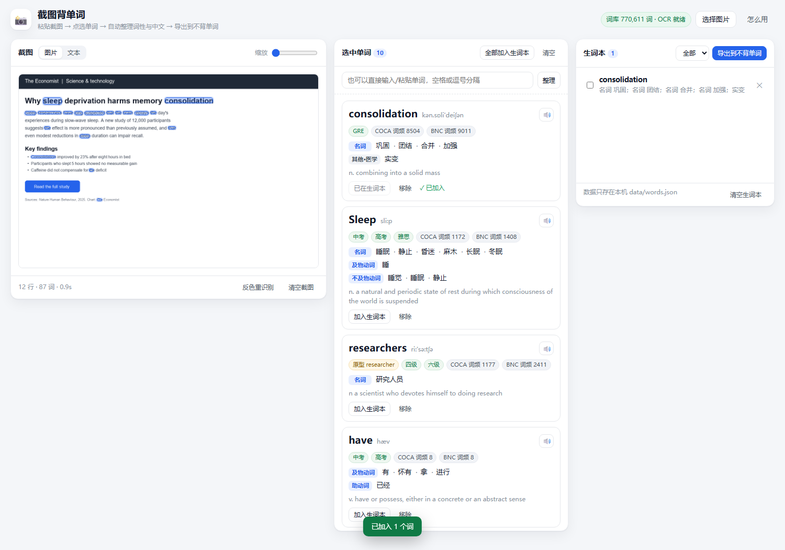

截图直接选词
粘贴截图后按词级定位，点击图片上的单词即可加入整理列表。
本地运行 · 数据不出电脑
从英文截图里直接点选单词，自动整理音标、词性、中文释义、考试标签和原形，再一键导出到不背单词。

适合从文章、课程、试卷或网页截图中收集生词。OCR、查词和生词本都在本机完成。
粘贴截图后按词级定位，点击图片上的单词即可加入整理列表。
给出音标、中文释义、考试标签、COCA/BNC 词频和屈折形式还原。
生词写入 data/words.json，可标记已背、筛选并随时导出。
导出纯单词 TXT、单词加释义或 CSV，走不背单词的官方导入路径。
服务只监听 127.0.0.1，截图交给本地识别进程，不发送到第三方。
前后端源码、测试、OCR 流程和词典构建脚本全部开放。
项目需要 Node.js 22.6 或更高版本。首次启动会准备本地词库。
GitHub Pages 无法运行本地 OCR 和词典接口。完整功能请下载源码并在电脑上启动。